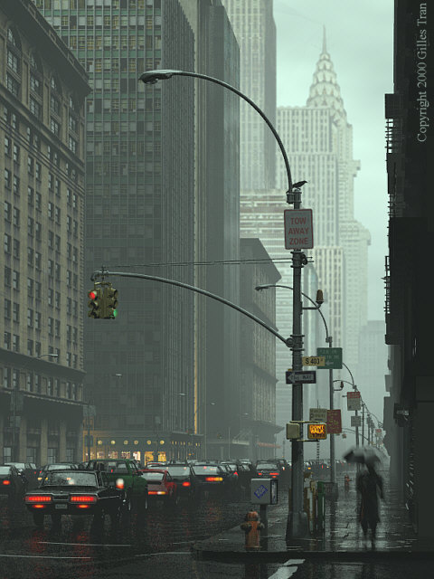

Développeur - Glyndwr University à Wrexham au Royaume-Uni
Stage de 3 mois lors du DUT Informatique
Ce projet consiste en la réalisation d'un logiciel sous la plate-forme  Mono, programmation en C#, qui permettrait à l'utilisateur d'utiliser le logiciel POV-Ray plus facilement.
Mono, programmation en C#, qui permettrait à l'utilisateur d'utiliser le logiciel POV-Ray plus facilement.
Mais... POV-Ray c'est quoi ?

POV-Ray (Persistence of Vision Raytracer) est un logiciel libre de lancer de rayons, « Raytracing » en anglais, c'est-à-dire de technique de synthèse d'image en 3D. Cependant, POV-Ray ne dispose pas d'une interface graphique (de modeleur 3D) intégré comme la plupart des logiciels de synthèse actuels, mais utilise des scripts de description de scène, dans lesquels tous les objets, les lumières, etc. doivent être décrits.

Mon binôme et moi trouvions que le logiciel était fastidieux. C'est pourquoi nous avons décidé de créer un logiciel qui permettrait de générer automatiquement le code désiré, à condition de renseigner certaines données. En se basant sur des interfaces comme MSPaint, GIMP ou encore Photoshop, nous avons développé une interface disposant d'une boîte à outils et d'une option de rendu graphique.
La boîte à outils disposait de quelques fonctionnalités :
- Création de diverses formes géométriques : sphère, cube, cylindre, cône, tore, etc...
- Création de ces formes suivant de nombreuses caractéristiques : coordonnées, dimensions, texture, couleur, etc...
- Option de rendu en un clic
Finalement, le logiciel permettait de créer un fichier externe contenant le code POV-Ray généré, sans avoir à se soucier de la syntaxe du langage.